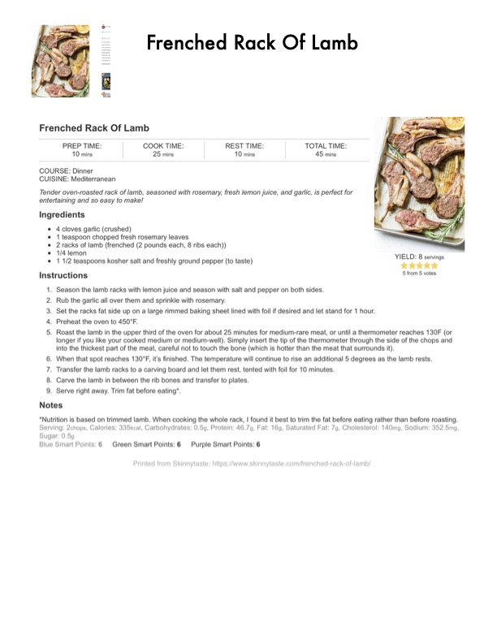

Frenched Rack Of Lamb

Original cookbook page 235
Tender oven-roasted rack of lamb, seasoned with rosemary, fresh lemon juice, and garlic, is perfect for entertaining and so easy to make!
Prep: 10 minutes • Cook: 25 minutes • Total: 45 minutes (includes 10 min rest)
Ingredients
- 4 cloves garlic (crushed)
- 1 teaspoon chopped fresh rosemary leaves
- 2 racks of lamb (frenched, 2 pounds each, 8 ribs each)
- 1/4 lemon
- 1 1/2 teaspoons kosher salt and freshly ground pepper (to taste)
Instructions
- Season the lamb racks with lemon juice and season with salt and pepper on both sides. Rub the garlic all over them and sprinkle with rosemary.
- Set the racks fat side up on a large rimmed baking sheet lined with foil if desired and let stand for 1 hour.
- Preheat the oven to 450°F.
- Roast the lamb in the upper third of the oven for about 25 minutes for medium-rare meat, or until a thermometer reaches 130°F. Insert the tip of the thermometer through the side of the chops and into the thickest part of the meat, careful not to touch the bone.
- When that spot reaches 130°F, it's finished. The temperature will continue to rise an additional 5 degrees as the lamb rests.
- Transfer the lamb racks to a carving board and let them rest, tented with foil for 10 minutes.
- Carve the lamb in between the rib bones and transfer to plates. Serve right away. Trim fat before eating.
Recipe #235 from collection